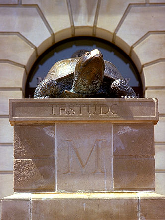

This project was developed for LBSC 690: Fall 2007by Chip Chase and Alfie PaulTo learn more about this project, click here.

|
Welcome!
If you have decided to do a practicum, this site is for you. We have taken the sites approved by the professors who teach 605 and and made them easy to navigate. Need a site that will allow you to work on Saturday? Can you only work in the District or Virginia? We have broken the sites down in the ways we think best serve student needs so that you don't have to go through the entire list looking for just the right one.
We have been through the process. We are CLIS students too. Your practicum will be, for many of you, your first experience in the world of archives. It is important to find one that meets both your practical needs and your interests. A museum collection will be different than a library. Government archives will give you a look into the archival profession that you cannot get from a small, private archives. Where you choose to get this experience is important. We hope this site will make it easier for you to find just the site for you.
One of the biggest frustrations for students and for the archivists being asked to supervise a practicum is just what is required. It seems simple: 1 project that takes 50 hours and a 6 to 10 page paper. Here is what the syllabus for Fall 2007 says:
A practicum of approximately 50 hours in an archival or records management repository or program, or a related information resources management program. The objective is to gain first-hand experience in the operation of a program by carrying out archival work. The practicum should have a clear focus and produce a result or product. It is your responsibility to arrange for your own practicum. The site may, but does not have to come from a list that the instructor will provide. The instructor must approve any site not on the list. At the end of the semester, you must submit a project report (6-10 pages) on the project which includes a description of the program, work carried out, and results, products or outcomes.
A few words about the requirements. It is your responsibility to find a site. If you really want to work in the archives on campus, get in contact with one of the men or women on this list as soon as possible.
Start early. Most of us work, all of us have school demands and the semester goes by fast. That usually leaves not much time per week to give to the practicum. Once you have chosen a site and have been accepted, get going. Also, remind the person for whom you will be working that the project should take 50 hours. There are students who have been asked to continue a project after semester's end. That is a personal choice, and may lead to a job after graduation. But remember, the requirement is to bring a project to completion and write a paper detailing the end product.
There is a lot of archival work that is not glamorous. It can be dirty, monotonous work. It might require lifting heavy boxes or hours of removing staples and paper clips. We are student workers, free labor. Go in knowing that you might not be doing all of the fulfilling, intellectual work that is also a part of the profession. If there is something specific you want to experience, ask about the project they have in mind before you commit to it. And keep in mind that every archivist, at just about every level, has to get down into the trenches with the collections they're in charge of.
We have grouped the data so that it can be viewed in several different ways. Geographic: DC, VA, or MD. Archives Type: Government, Museum, Academic, or Private. Contact info: Phone, Email Only, Both. Click on the links at the top of the page in order to access the lists.
Enjoy!
|